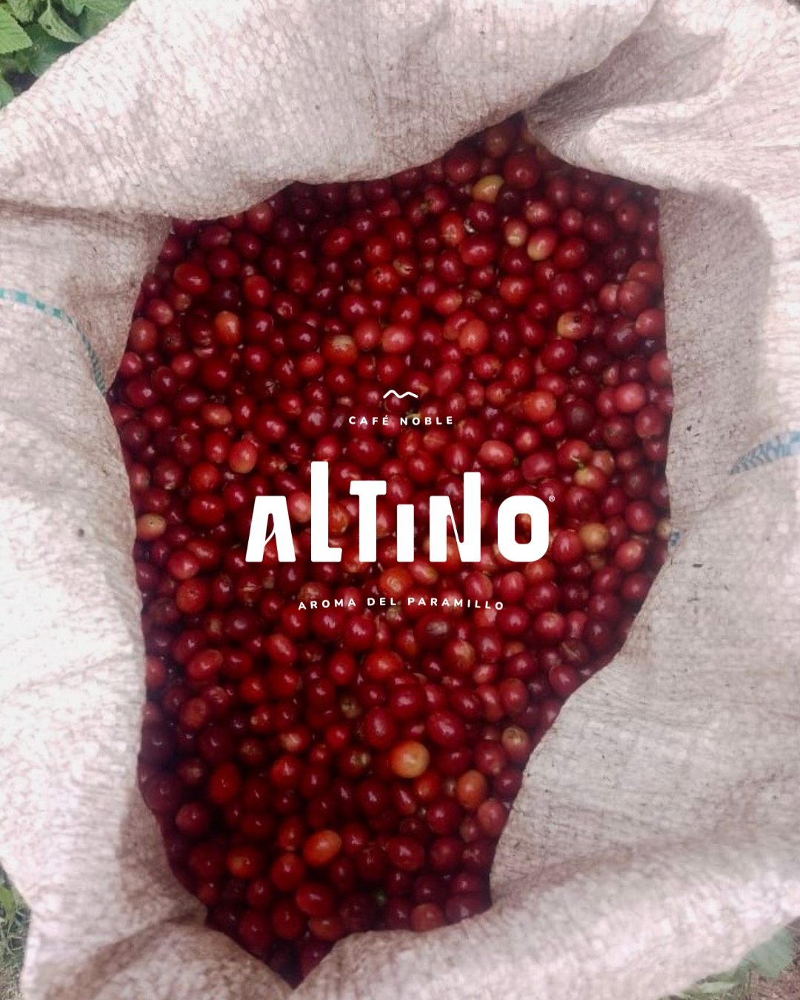

Nuestro Origen
Donde el trabajo duro, la tenacidad y la montaña se encuentran.
Las laderas del Nudo del Paramillo
Altino nace en las laderas del Nudo del Paramillo, a 1850 m s. n. m., un ecosistema estratégico en Dabeiba, Antioquia, que nos exige una caficultura de alta precisión y un respeto absoluto por el entorno. Nuestro café une biodiversidad, historia y resiliencia a través de tres orígenes locales: en el corregimiento San José de Urama (vereda Charrascal) cosechamos en las fincas Los Socios y Villa Consuelo, de la mano del productor Aicardo López; y en la vereda El Pital, cultivamos en la finca La Chiquita junto al productor Oscar Álvarez.

Finca Los Socios
En nuestra casa matriz cultivamos con rigor técnico variedades que cuentan la historia de la caficultura colombiana: Castillo, Caturra, Colombia, Marsellesa y Cenicafé 1. Esta diversidad de perfiles, unida a la altitud, nos permite entregar un café de suavidad excepcional y alta calidad sensorial.
Finca Villa Consuelo: Un origen que rinde homenaje a la tradición de la montaña a través del cultivo meticuloso de las variedades Colombia, Castillo y Caturra, logrando un balance perfecto en taza.
Finca La Chiquita: El escenario de la innovación y la adaptación, donde la altitud recibe a las variedades Etíope, Cenicafé y Colombia, entregando perfiles únicos y diferenciados.
Tres fincas donde el trabajo duro, la tenacidad y la geografía de Dabeiba se encuentran para crear un café extraordinario.
Altitud + Nobleza
El nombre Altino nace de la unión de dos conceptos que nos definen: la altitud de nuestras montañas, que otorga a nuestro café una suavidad y calidad sensorial superior, y la nobleza de nuestra gente.
Dignificar el campo
Dabeiba no es solo el lugar donde crecemos; es el suelo que nos permite demostrar que el café es, ante todo, un lazo que nos une con quienes lo producen y con la naturaleza que nos da la vida. Transformamos la resiliencia de Dabeiba en un café de alta montaña con compromiso ambiental y social.